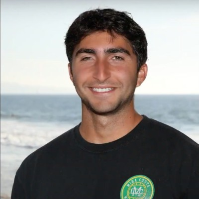

Head CoachAdoni Nahabed
Coach Adoni grew up in Manhattan Beach, California. He attended, played water polo, and swam at Mira Costa High School from 2011-15. He then played two years of college water polo before returning to Mira Costa in 2017 to start coaching. He was an assistant coach to Head Coach Jon Reichardt since then for the boys and girls teams. In the 2025-26 school year, he became the Head Coach for this Girls program. He has also coached at Trojan Water Polo Club, where he is currently the Director of the Girls Program, Long Beach Viking Water Polo Club where he coached a 16U Girls team to 7th place in the nation in 2025, as well as working in the USA Olympic Development Program since 2023. He continues to assist the boys Mira Costa team.
His strongest overall finish as a coach is as an assitant to the boys team, which got 4th in the Open Division in 2025.
Off the deck, he enjoys spending time with his family, camping, and is currently in school earning his teaching credential.